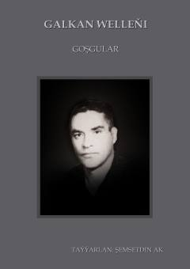

GWTurkman shoiri Galkan Welleňining vatan va insonparvarlik ruhidagi she'rlari to'plami.
Ushbu kitob turkman shoiri Galkan Welleňining hayoti va ijodiga bag'ishlangan she'riy to'plamdir. Unda shoirning vatan sog'inchi, insonparvarlik va hayotiy qarashlari aks etgan she'rlari jamlangan.